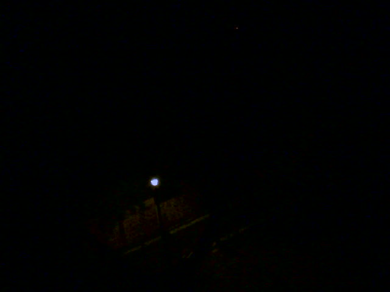

00:43 - Sorry for not updating you much again. I really should have.
I did some stuff today but I still wish I did a bit more. It'll be okay though since I'm already ready bed and I think I'm sleepy enough to sleep, so I might be able to make a whole lot of progress with my sleep schedule. I have a few ideas what to do tomorrow (okay, technically today, but like after I wake up) but I'll keep those to myself.
I've been doing more meditation and I went running today so overall I think things are on a good trajectory. I have to be careful to not expect too much of myself too quickly though.
04:56 - Hello. I'm actually on my balcony right now, the cold air is nice but I probably ought to have some kind of coat, I'll get one now.
05:33 - Hello again, I got the coat and did some other stuff. I feel really quite nice, maybe next time something like this occurs it'd be nice to start it by meditating, I might go back to sleep soon enough but then again I don't feel that tired.
I think my sense of smell has been better than usual lately, and overall I've felt more soulful and more aware of the city. I look forward to Uni too, there's a lot of soul to be found there but it's much smaller than this place, so hopefully I'll be able to become well aquainted with it before I have to leave. There is enough time really, I just have to use it well.
05:38 - I can hear some birds singing, although they sound kind of far from here. The hum of early morning traffic is just about audible, but it's at no more than a low rumble,
It could be quite nice when I'm at uni and I'm not too far from the woods proper. But me having the time to enjoy those woods is very much contingent on me being on top of work, and my choices today are a part of that.
The main thing is just to get to the library; when I'm in the library the studying is easy enough. Maybe if I think through the journey now then it'll be easier when it comes time to start.
05:49 - I have an idea about an ideal schedule for today and I have it written down, but I think that "ideal" part is probably a lot of why these plans never work out. I'm neither in an ideal state nor have ideal conditions, so if I only have an ideal plan (like a plan for an ideal day) then I'm setting myself up for failure and disappointment. When I leave my balcony and go up to my room I'll write down a decent schedule that's more lenient.
I'll pray a bit at the altar thing in my house. I'm not really superstitious but I've found it useful for myself. I guess it's just nice to think about my family and about how I came to be, and aout what I feel I'm most urgently lacking.
05:57 - I can see a tinge of blue to the West. I'll head back up, write the aforementioned schedule and then sleep.

This has been great. Thank you for reading.09:35 - I've had breakfast and stuff and now I just need to start my walk to the library. I was a little undisciplined earlier since I didn't properly focus and steady my mind while in bed earlier but oh well. I feel quite good anyway.